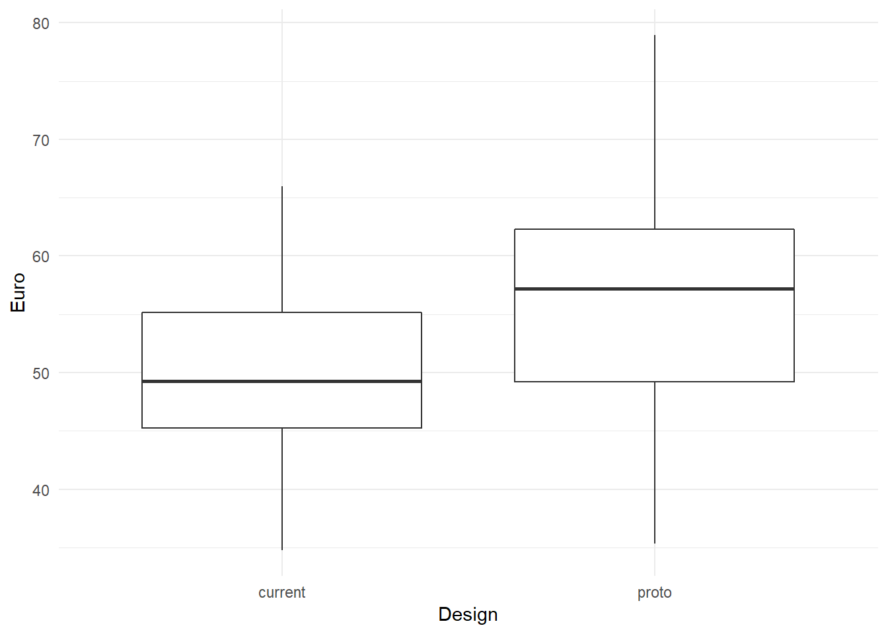
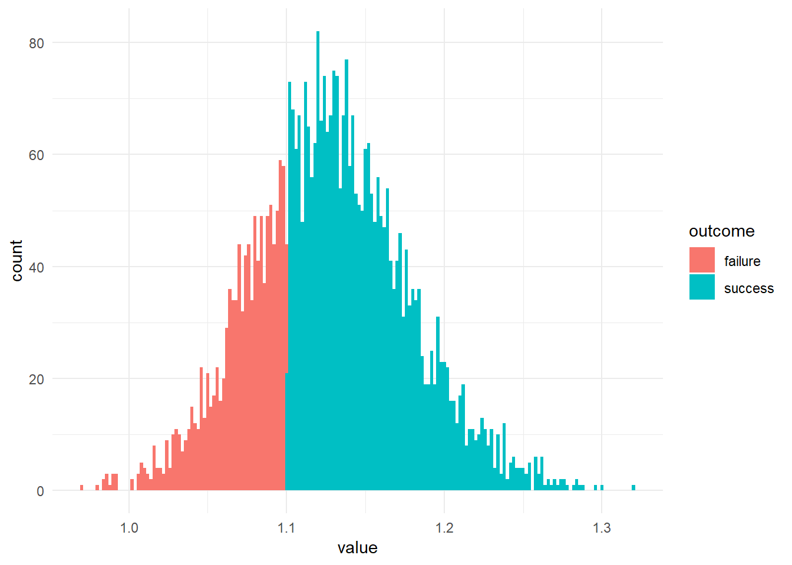
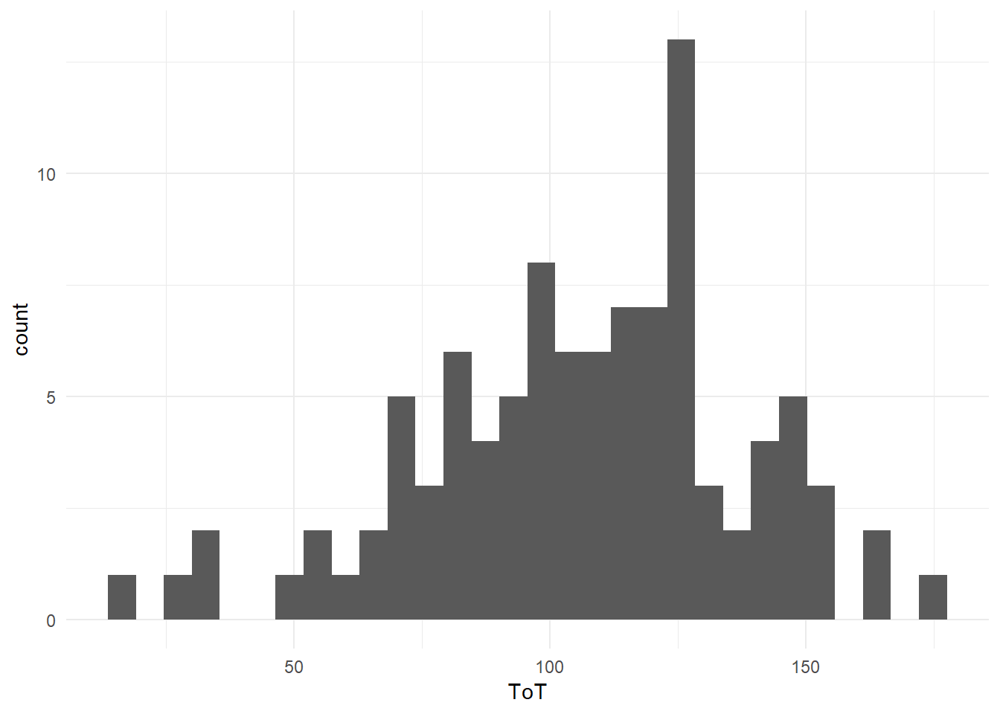
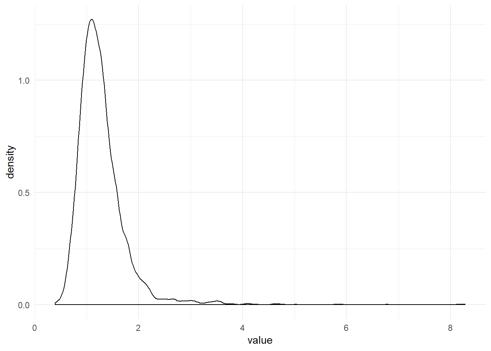
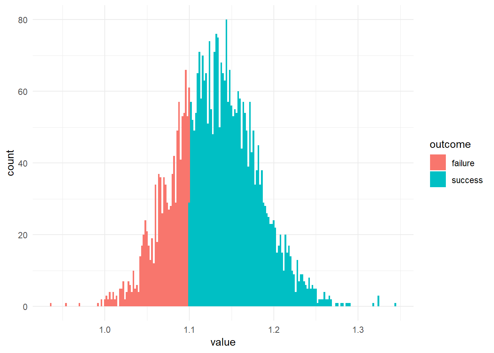

2 Elements of quantitative design research
A design is the structure of an artifact or process that people use for a purpose. This definition appears extremely broad as it covers everything from tea kettles to complex information systems, and even silver bullets are included if you wish so. In fact, this definition is even redundant in two points: first, artifacts are usually made for a purpose and some call them just “tools”. Second, who else than people have purposes? Well, many wild animals reportedly create artificial structures for purposes such as shelter, mating and hunting. I have absolutely no objections against using this book to compare the stability of birds nestings, for example. (In such a case, everyone please, read “design” as “part of the extended phenotype” and “purpose” as “emerged by natural selection”.
This book may apply to everything anyone likes to call a design; but only so for a specific set of research questions that hinge on the word “purpose”. We all have purposes and much of the time it is quite a job to get there. Getting-there typically requires resources and often enough we find ourselves right there only to some extent. So, the two basic questions in quantitative design research are:
- to what amount is a purpose fulfilled?
- how easy is it to get there?
To the apt reader this may sound as i would next reduce all quantitative design research to the concept of usability and in a way i will be doing just that below (even discarding some subconcepts). The point here is that statistician actually don’t care much about definitions from a domain, but think about research problems in a more abstract manner. Here is a number of things, a statistician would inquire:
- On what a scale is the measurement of purpose fulfillment?
- What is the expected precision of measures? Is a lot of noise to be expected?
- How many observations are available?
- Is the research concerned with how purpose fulfillment compares under various conditions?
- How are observations grouped?
In this book, quantitative design research is rather defined by a set of typical research problems, which includes the structure of the research question, as well as the empirical circumstances. In the following I will break this down one by one, and will also point out why the statistical framework of this book Bayesian regression models will do the job.
2.0.0.0.1 Introduce magnitude, as this is used when explaining uncertainty.
One obvious element is quantification, but that carries some ambiguity, as we can speak of measures or research questions. In much research, quantification happens during the process of measuring. Recording reaction times or counting errors certainly is quantitative. But, what matters is to really ask quantitative research questions and try to answer them. In the real world, decisions are (or should be) based on benefits and rational allocation of resources. Changing the background color of a website might just be a switch (and can have undesired effects as users hate change), but restructuring an intranet site can cost a million. In industrial design research, there usually is someone who wants to know whether this or that redesign is worth it, and that requires to ask research questions like the following:
- By how much does reaction ability degrade with age and it is safe that people beyond 80 still drive?
- Does design B reduce the required number of steps by a third, at least?
- What proportion of users prefers red over yellow? All websites better go red?
Sadly, in much existing research, quantification is frequently lost along the way and conclusions read more like:
- Older people have longer reaction times in traffic situations (\(p \leq .05\)).
- People find information more easily with design A, compared to B (\(p \leq .05\)).
- Chinese people on average prefer red color schemes over yellow (\(p \leq .001\)).
There simply is no numbers in these statements (except for the notorious p-values, which I will briefly discuss in chapter @ref(bayesian_statistics)).
Regression models are just right for measures and they are terrific at drawing quantitative conclusions. Every regression model features a so called outcome, which must be a measure (rather than a category). At the same time, regression models can deal with a broad class of measures and their peculiarities.
Modern designs tend to be very complex and so are research questions, potentially. The options for designing just your personal homepage are myriad and there is considerable uncertainty about which options, or rather which configuration works best. Consider every option, say font type, font size, color, background color, position of menu, a potential impact factor on how pleasant the page is to read. Perhaps, someone should once and for all figure out the optimal configuration. It is recommended in such a case, that as many as possible impact factors are represented in a single study and evaluated by a single comprehensive statistical model. The primary reason for this recommendation is given in chapter @ref(interaction_effects): impact factors have the nasty tendency to not act out independent of each other. Regression models handle such complexity with grace. There is theoretically no limit for the number of impact factors or predicors and interaction effects.
The central peculiarity in all behavioural research is that measures are extremely noisy. In the next chapter, the concept of measurement errors will be elaborated upon, but for now it suffices to understand that all measures approximate the measured property, only and that leaves room for uncertainty. In a simple experiment where participants respond to a signal and time is recorded, the first three trials will more likely have values that are widely scattered, like 900ms, 1080ms, 1110ms. Imagine this were an ability test in a training for, say, astronauts. To be admissioned to the space program the applicant needs a score of less than 1000ms. Would you dare to decide on the career of a young person based on these three observations? Hardly so.
On the other side, consider measuring a persons waste length for the purpose of tayloring a suit. By using a meter the taylor measures 990mm, and would be perfectly fine with that. Why did the taylor not take a second and a third measure? Well, experience tells that meters are pretty precise measures and waste length shows relatively little variation (under constant habits). Say the two measures were 995mm and 989mm. Such small deviations have practically no influence on cutting the linen.
“Our minds are not run as top - down dictatorships ; they are rambunctious parliaments, populated by squabbling factions and caucuses, with much more going on beneath the surface than our conscious awareness ever accesses.”
Carroll, Sean. The Big Picture (Kindle Locations 5029-5031). Oneworld Publications. Kindle Edition.
Vast fluctuations of measures are common in design research, simply for the fact that human behaviour is involved. Every magnitude we derive from a study is uncertain to some degree. Uncertainty makes that at any moment, we can rely on a quantitative result only to some extent, which influences how we take risks. Statistics is called inferential, when every derived magnitude comes with a degree of certainty attached. Section @ref(decision_making) gives some reasoning and examples, how to operate rationally under uncertainty, and drives at right into the arms of Bayesian statistics.
In an admission test for astronaut training, a decision is raised on very few individuals. Down on earth, everyday designs affect many people at once. Consider your personal homepage. If you decide, for aesthetic reasons, to shrink the font size, I promise you, that you just start loosing all visitors from the e-senior generation. Or, if your content is really good, they start using looking glasses on their o-pads. As a researcher, you can approach this in two ways: do a user study to compare the new design to the current design, or be the one who finds out, once and for all, what the optimal trade-off is between readability and aesthetic pleasure. Your method of choice would be an experiment.
When you have no greater goal in mind than proving your design is of quality, user studies are effective and quick. In the easiest case, you want to put your design against a fixed benchmark. For example, in the design of automotives, media devices in the cockpit may not distract the driver for more than 1.5 seconds at times [REF]. To prove that, you will have to plug some advanced eye tracking gear into a prototype car and send people on the test drive. But once the precise data is in, things get really simple. The saccade measures directly represent what you were out for: the length of episodes of visual attention on the media display. You can take the average value. IN web design, it is common to compare two or more designs in order to make the best choice. An e-commerce company can put a potential future design on the test drive, delivering it to a customer sample. Performance is measured as hard currency, which is as close to the purpose as it can get.
A user studies solves the momentary problem of comparing a local design to a benchmark (which can be another design). In the long run, design configurations are too manyfold to be compared in a one-by-one manner. It is inevitable that we try to trace some general patterns and apply our knowledge to a whole class of designs at once. Our research design just got one step more complex. Instead of just checking whether a smaller font size creates problems on a single website, the reseacher reaches out to comparing the combined effect of aging and font size on reading time, in general. This is what I call a design experiment.
Design experiments allow for much broader conclusions, if done right, and there are a some issues:
- The design features under scrunity must be under control of the researcher. It does not suffice to collect some websites with varying font sizes, but every website needs to undergo the test at various font sizes.
- The design feature must undergo a full range of manipulations. You will not find the laws of readability by just comparing 10pt versus 12pt.
- Design features usually do not stand on their own. Readability is influenced by other factors, such as contrast and comprehensibility. Deriving a model from just one design will only generalize to this one design. Hence, the researcher must run the experiment on a sample of designs, with one of two strategies (or a mix of both): the randomization strategy takes a representative sample of designs, hoping that other impact factors average out. As we will see in @ref(interaction_effects), this is a daring assumption. Therefore, the preferred way is statistical control, where potential impact factors are recorded and added as control variables to the regression model.
2.0.0.0.2 TODO
- Designing is wicked
- Evaluative design research
- Decision problems in design research
- Design research as exploration
- Mapping multidimensional impact factors
- Quantification for decision making
- Minimax decision making on designs
- Measures and psychometrics
- Emergent design theories
2.1 Studies
- user studies
- experimental/fundamental studies
- qualitative vs quantitative
2.2 Observations and measures[TBC]
2.2.1 Interaction sequences
Behavioural records not necessarily require one-way mirrors and the nights of video coding. Log files of web servers provide sequences of how users navigate a web site. Plugin software is available that records keystrokes and mouse actions on computers. The difficult part is the following: When observing 50 users while doing a non-trivial task, no two interaction sequences are exactly the same (if i had to bet on it). By itself, there is little value without further means of interpretation and this can go two ways up:
The diligent and skilled qualitative researchers are able to extract meaningful patterns from such sequences. For example, in usability tests, the following patterns are frequently observed and interpreted.
- a user jumping back to the main screen possibly went into a wrong direction
- users randomly probing around either have no clue or no motivation
- users in a longitudinal study who only interact at the begin and the end of the period, have no use for the system, really.
The quantitative researcher will aim at deriving measures from the interaction sequence. Formally, to measure means assigning numbers to observed sequences, so that these can be brought into an order, at least. Obviously, we need some sort of transformation that gives us a single performance score. This we call here the performance function and we have many choices, for example:
- the number of all exploratory events
- their relative frequency
- their longest uninterrupted sequence
- total time spent in exploration
Sometimes, you have to go a long way up the qualitative route, before you can derive useful measures. In [Schnittker, Schmettow & Schraagen, 2016], we coded sequences from nurses using an infusion pump. Individual sequences were compared to a optimal reference path, the similar the better. But how to measure similarity? For eample, Levensthein distance counts the number of edits to transform one sequence into the other and we used it as the performance score: deviation from optimal path. Even more interpreting was another study we did on the active user paradox. We recorded interaction sequences of users doing some repetitive tasks with a graphics software. The sessions were taped and analysed using a behavioural coding scheme. First, events were classified on a low level (e.g. “reading the handbook”, “first time trying a function”) and later aggregated to broader classes (e.g. “exploratory behavior”). The number of events in a given time frame that were classified as such were finally taken as a measure, representing the exploratory tendencies.
2.2.2 performance measures
A good point to start with is the classic concept of “usability”, which the ISO 9142-11 defines by the following three high-level criteria:
- effectiveness: can users accomplish their tasks?
- efficiency: what resources have to be spend for a task, e.g. time.
- satisfaction: how did the user like it?
While these criteria originated in the field of Human-Computer Interaction, they can easily be adapted to compare everything that people do their work with. Even within the field, it has been adapted to hundreds of studies and a hundred ways are reported of assessing these criteria.
Effectiveness is often measured by completion rate (CR). A classic waterfall approach would be to consult the user requirements documents and identify the, let’s say eight, crucial tasks the system must support. User test might then show that most users fail at the two tasks, and a completion rate of 75% is recorded for the system. Completion rate is only a valid effectiveness measure with distinct tasks. Strictly, the set of tasks also had to be complete, covering the whole system. When completion rate is taken from in series of repetitive tasks, it depends on whether it is effectiveness or efficiency. It is effectiveness, when a failed operation is unrepairable, such as a traffic accident, data loss on a computer or medical errors. But, who cares for a single number between 0 and 1, when the user test provides such a wealth of information on why users failed? Effectiveness, in the sense of task completion, is primarily a qualitative issue and we shall rarely encounter it in this book.
A more subtle notion of effectiveness is the quality of outcome, and despite the very term, is a measure. Perhaps, it should better be called task perfection. Reconsider the AUP study, where participants had to modify a given graphic, e.g. change some colors and erase parts of it. Of course, some participants worked neatly, whereas others used broader strokes (literally). There certainly is a reasonable objective way to rank all results by quality.
Efficiency is where it really gets quantitative as with efficiency, we ask about resources: time, attention, strain, distraction and Euros. Other than that, efficiency can be measured in a vast variety of ways: ToT, clicks, mental workload or time spent watching the traffic while driving.
Counting the number of clicks before someone has found the desired piece of informnation is a coarse, but easy to acquire and intuitive measure of efficiency, and so is time-on-task (ToT), which is just the sum . Still, these It differs from ToT in that it only counts real action, not the time a participant read the manual or watched the sky. In the downside, this is a very limited definition of action. While errors are usually best analyzed qualitatively, error rate can be efficiency, too, when failures are non-critical, but can be repaired in some time, such as correcting a typing error.
ToT and other performance measures can be very noisy, and RT even more so. In order to arrive at sufficiently certain estimates, it is recommended to always plan for repetition. In [LMM] we will make heavy use of repeated measures on users, tasks and designs.
Above, I did not mean to say that design research always requires the sometimes painful recording of interaction sequences. The majority of studies jumps over them and proceed to performance measures, directly, by counting attempts or pressing stop watches.
In many situations, such direct measures are right spot-on: When controlling a car in dense city traffic, a few hundred milliseconds is what makes huge a difference and therefore reaction time is a valid performance measure. In experimental cognitive research reaction times are a dominant tool to reveal the structure of the mind. The Stroop tasks is a golden evergreen cognitive psychology and serves as an example. Participants are shown a words drawn in one of three ink colors and are asked to name the ink as quick as possible. The Stroop effect occurs: in the incongruent condition, participants respond much slower than in the congruent and neutral (a few hundred ms). There is ample sweet replication of this effect and an ecosystem of theories surround it. In [Schmettow, Noordzij, Mundt] we employ the Stroop task to read the minds of participants. We showed them pictures with computers on them, followed by a printed word (e.g., “explore”) on which to perform the Stroop task. It was conceived that reaction time is increased when a participant experiences a strong association, like:
black tower PC + “explore” –> “can someone hand me a screwdriver”
CONDITION WORD : Ink congruent [GREEN ]: green incongr [YELLOW]: green neutral [CHAIR ]: green
2.2.2.1 –>Satisfaction
2.2.3 experience [TBD]
2.2.4 design features [TBD]
2.2.5 the human factor [TBD]
2.2.6 situations [TBD]
2.3 Decision making under uncertainty
- I see clouds. Should I take my umbrella?
- Should I do this bungee jump? How many people came to death by jumping? (More or less than alpine skiing?) And how much fun is it really?
- Overhauling our company website will cost us EUR 100.000. Is it worth it?
All the above cases are examples of decision making under uncertainty. The actors aim for maximizing their outcome, be it well being, fun or money. But, they are uncertain. And their uncertainty occurs on two levels:
- One cannot precisely foresee the exact outcome of one’s chosen action:
- Taking the umbrella with you can have two consequences: if it rains, you have the benefit of staying dry. If it does not rain, you have the inconvenience of carrying it with you.
- You don’t know if you will be the unlucky one, who’s bungee rope breaks, with fatal consequences.
- You don’t know whether the new design will attracts more visitors to your website and serves them better.
- It can be difficult to precisely determine the benefits or losses of potential outcomes:
- How much worse is your day when carrying a useless object with you? How much do you hate moisture? In order to compare the two, they must be assessed on the same scale.
- How much fun (or other sources of reward, like social acknowledgements) is it to jump a 120 meter canyon? And how much worth is your own life to you?
- What is the average revenue generated per visit? What is an increase of recurrance rate of, say, 50% worth?
Once you know the probabilities of events and the respective values, decision theory provides an intuitive framework to estimate these values. Expected utility \(U\) is the sum product of outcome probabilities \(P\) and the involved losses \(L\). As such, it is the average loss one can expect, when following a particular strategy.
In the given case, two strategies exist, namely taking an umbrella versus taking no umbrella, when it is cloudy. We calculate and compare the expected utilities U as follows:
\[\begin{aligned} P(rain) = 0.6 \\ P(no rain) = 1 - P(rain) = 0.4 \\ L(carry) = 2 \\ L(wet) = 4 \\ U(umbrella) = P(rain) L(carry) + P(no rain) L(carry) = L(carry) = 2\\ U(no umbrella) = P(rain) L(wet) = 2.4 \end{aligned} \]
attach(Rainfall)
Actions <-
data.frame(action = c("umbrella", "no umbrella"))
Events <-
data.frame(event = c("rain", "no rain"),
prob = c(0.6, 0.4))
Loss <-
expand.grid(action = Actions$action, event = Events$event) %>%
join(Events) %>%
mutate(loss = c(2, 4, 2, 0))
Decision <-
Loss %>%
mutate(conditional_loss = prob * loss) %>%
group_by(action) %>%
summarise(expected_loss = sum(conditional_loss))
Decision| action | expected_loss |
|---|---|
| no umbrella | 2.4 |
| umbrella | 2.0 |
We conclude that, given the high chance for rain, and the conditional losses, the expected loss is larger for not taking an umbrella with you. It is rational to take an umbrella when it is cloudy.
2.3.1 Measuring uncertainty
As we have seen above, a decision requires two investigations: the indeterministic nature of outcomes, and the assigned loss. Assigning loss to decisions is highly context dependent and often requires domain-specific expertize (or even individual judgment). We will do the formalization of it one more time, then set it aside. The issues of indeterministic processes and the associated uncertainty is basically what the field of statistics deals with. We encounter uncertainty in two forms: first, we usually have just a limited set of observations to draw inference from, this is uncertainty of parameter estimates. From just 20 days of observation, we cannot be absolutely certain about the true chance of rain. It can be 60%, but also 62% or 56%. Second, even if we precisely knew the chance of rain, it does not mean we could make a certain statement of the future wheather conditions, which is predictive uncertainty. For a perfect forecast, we had to have a complete and exact figure of the physical properties of the atmosphere, and a fully valid model to predict future states from it. For all non-trivial systems (which excludes living organisms and wheather), this is impossible.
Review the rainfall example: the strategy of taking an umbrella with you has proven to be superior under the very assumption of predictive uncertainty. As long as you are interested in long-term benefit (i.e. optimizing the average loss on a long series of days), this is the best strategy. This may sound obvious, but it is not. In many cases, where we make decisions under uncertainty, the decision is not part of a homogeneous series. If you are member of a startup team, you only have this one chance to make a fortune. There is not much opportunty to average out a single failure at future occasions. In contrast, the investor, who lends you the money for your endeavour, probably has a series. You and the investor are playing to very different rules. For the investor it is rational to optimize his strategy towards a minimum average loss. The entrepreneur is best advised to keep the maximum possible loss at a minimum.
As we have seen, predictive uncertainty is already embebedded in the framework of rational decision making. Some concepts in statistics can be of help here: the uncertainty regarding future events can be quantified (for example, with posterior predictive distributions) and the process of model selection can assist in finding the model that provides the best predictive power.
Still, in our formalization of the Rainfall case, what magically appears are the estimates for the chance of rain. Having these estimates is crucial for finding an optimal decision, but they are created outside of the framework. Furthermore, we pretended t o know the chance of rain exactly, which is unrealistic. Estimating parameters from observations is the reign of statistics. From naive calculöations , statistical reasoning differs by also regarding uncertainty of estimates. Generally, we aim for making statements of the following form:
“With probability \(p\), the attribute \(A\) is of magnitude \(X\).”
In the umbrella example above, the magnitude of interest is the chance of rain. It was assumed to be 60%. This appears extremely high for an average day. A more realistic assumption would be that the probability of rainfall is 60% given the observation of a cloudy sky. How could we have come to the belief that with 60% chance, it will rain when the sky is cloudy? We have several options, here:
Supposed, you know that, on average, it rains 60% of all days, it is a matter of common sense, that the probability of rain must be equal or larger than that, when it’s cloudy.
You could go and ask a number of experts about the association of clouds and rain.
You could do some systematic observations yourself.
Maybe, you have recorded the coincidences of clouds and rainfall over a period, of, let’s say, 20 days. You made the following observations:
Rain %>% as_tbl_obs()| Obs | cloudy | rain |
|---|---|---|
| 3 | TRUE | FALSE |
| 6 | FALSE | FALSE |
| 7 | FALSE | FALSE |
| 12 | TRUE | TRUE |
| 15 | FALSE | TRUE |
| 17 | FALSE | TRUE |
| 18 | FALSE | FALSE |
| 19 | TRUE | FALSE |
Intuitively, you would use the average to estimate the probability of rain under every condition.
T_desc <-
Rain %>%
group_by(cloudy) %>%
summarize(chance_of_rain = mean(rain))detach(Rainfall)These probabilities we can feed into the decision framework as outlined above. The problem is, that we obtained just a few obervations to infer the magnitude of the parameter \(P(rain|cloudy) = 60\)%. Imagine, you would repeat the observation series on another 20 days. Due to random fluctuations, you would get a more or less different series and different estimates for the probability of rain. More generally, the true parameter is only imperfectly represented by any sample, it is not unlikely, that it is close to the estimate, but it could be somewhere else, for example, \(P(rain|cloudy) = 60.595\)%.
The trust you put in your estimation is called level of certainty or belief or confidence. It is the primary aim of statistics to rationally deal with uncertainty, which involves to measure the level of certainty associated with a certain statement. So, what would be a good way to determine certainty? Think for a moment. If you were asking an expert, how would you do that to learn about magnitude and uncertainty regarding \(P(rain|cloudy)\)?
Maybe, the conversation would be as follows:
YOU: In your experience, what is the chance of rain, when it’s cloudy.
EXPERT: Wow, difficult question. I don’t have a definite answer.
YOU: Oh, c’mon. I just need a rough answer. Is it more like 50%-ish, or rather 70%-ish.
EXPERT: Hmm, maybe somewhere between 50 and70%.
YOU: Then, I guess, taking an umbrella with me is the rational choice of action.
Note how the expert gave two endpoints for the parameter in question, to indicate the location and the level of uncertainty. If she had been more certain, she had said “between 55 and 65%. While this is better than nothing, it remains unclear, which level of uncertainty is enclosed. Is the expert 100%, 90% or just 50% sure the true chance is in the interval? Next time, you could ask as follows:
…
EXPERT: Hmm, maybe somewhere between 70-90%
YOU: What do you bet? I’m betting 5 EUR that the true parameter is outside the range you just gave.
EXPERT: I dare you! 95 EUR it’s inside!
The expert feels 95% certain, that the parameter in question is in the interval. However, for many questions of interest, we have no expert at hand (or we may not even trust them altogether). Then we proceed with option 3: making our own observations.
2.3.2 Betting on designs
The design of systems can be conceived as a choice between design options. For example, when designing an informational website, you have the choice of making the navigation structure broad (and shallow) or deep (and narrow). Your choice will to some extent, change usability of the website, hence your customer satisfaction, rate of recurrance, revenue etc.
2.3.3 Case: e-commerce A/B
Consider the following example: Violet is development manager of a e-commerce website. At present, there is debate about a major overhaul of the website. Most management team members agree that implementing a better search function will increase the revenue per existing customer. At the opposite, there are considerable development costs involved, which you have estimated to EUR 100.000.
Upper management has a keen eye on shareholder value and wants the costs to be covered by increased revenues within one year. As the company’s total revenue per year is 1.000.000 Euro, an increase by factor 1.1 is required to cover the development costs.
In order to get a rough idea whether this target can be met, Violet conducts a study where she observes the transactions of 50 random customers using the current system with 50 transactions with a prototype of the new system. The measured variable is the money every participant spends during the visit. The question is:
“Do customers in the prototype condition spend 10% more on average?”
The figure below shows the distribution of revenue in the experiment.
attach(Rational)RD %>%
ggplot(aes(y = Euro, x = Design)) +
geom_boxplot()
There seems to be a slight benefit for the prototype condition. But, is it a 10% increase? And how certain can Violet be? A formal regression analysis gives the answer 1.
M_1 <-
RD %>%
stan_glm(Euro ~ Design,
family = Gamma(link="log"),
data = .)
P_1 <- posterior(M_1)T_fixef <- fixef(P_1, mean.func = exp)
T_fixef| fixef | center | lower | upper |
|---|---|---|---|
| Intercept | 5.00e+01 | 4.70e+01 | 5.30e+01 |
| Designproto | 1.13e+00 | 1.03e+00 | 1.23e+00 |
| shape | 1.77e+09 | 8.00e+06 | 1.13e+12 |
The results tell her that participants spend \(49.975\) Euro on average with the current design. The prototype seems to increase the revenue per transaction by \(1.126\). That seems sufficient, but uncertainty is strong, too, as indicated by the 95% credibility intervals. There is a chance of more than 2.5%, that the revenue is just \(47.035, 1.035, 8.003\times 10^{6}\) (or lower), such that the target is not met. But what precisely is the chance of falling below EUR 5? In Bayesian analysis we usually get the complete posterior distribution, which we can evaluate to get a definite answer:
What is the probability of the increase in revenue being less than 5 EUR?
We inspect the posterior distribution and mark the area of interest
N_risk_of_failure_1 <-
P_1 %>%
filter(parameter == "Designproto") %>%
mutate(value = exp(value),
outcome = value < 1.1) %>%
select(outcome) %>%
colMeans
P_1 %>%
filter(parameter == "Designproto") %>%
mutate(value = exp(value),
outcome = ifelse(value < 1.1, "failure", "success")) %>%
ggplot(aes(x = value, fill = outcome)) +
geom_histogram(binwidth = .002)
detach(Rational) The red area represents the danger zone, where revenue increase does not reach EUR 5. The area amounts to 28.65% of the total probability. With this information the manager now has several options:
- decides that 28.65% is a risk she dares to take
- be confident in herself because past successes prove that she should follow her intuition
- take into account other sources of evidence, for example expert opinions or meta studies
- continue the study until sufficient evidence is gathered, but costs of additional effort have to be accounted for
The first option represents an unspecific tolerance towards risk. Extreme risk tolerance of managers is infamous as one cause for large scale economic crises [BLACK_SWANs]. Her motives could be manifold, still: maybe she was nursed to take risks in her life; or she is confident that consequences in case of failure will be bearable.
The second and third options have something in common: they make use of external knowledge. This is explained in the coming section. The fourth option is another way of making cumulative use of knowledge, namely [adaptive testing: find correct term].
2.3.4 Case: 99 seconds
Consider Jane: she is chief engineer at a mega-large rent-a-car company smartr.car that is doing their business nothing but online. Jane was responsible for a large scale overhaul of the customer interface for mobile users. Goal of the redesign was to streamline the user interface, which had grown wild over the years and had become boring. Early customer studies indicated that the app needed a serious visual decluttering and stronger funneling of tasks. 300 person months went into the re-development and the team did well: a recent A/B study had shown that users learned the smartr.car v2.0 fast and could use its functionality very efficiently. Jane’s team is prepared for the roll-out, when marketing requested the following:
marketing: we want to support market introduction with the following slogan: “rent a car in 99 seconds”.
Jane: not all users manage a full transaction in that short time. That could be a lie.
marketing: legally, the claim is fine if it holds on average.
Jane: i can find out for you (but we won’t violate any rules).
Jane takes another look at the performance of users in the smartr car v2.0 condition. As she understands it, she has to find out whether the average of all recorded time-on-tasks with smartr.car 2.0 is 99 seconds, or better. Here is what she sees:
attach(Sec99)Ver20 %>%
ggplot(aes(x = ToT)) +
geom_histogram()
Jane, trained in statistics as she is, figures that if she would make such a statement, she wanted to be 90% sure. The performance is not completely off 99 seconds. But given the huge variance in the sample, it seems impossible to hold the desired claim with a certainty of 80%. Still, she gives it a try and runs an estimation (which we will later get to know as a grand mean model)
M_1 <-
Ver20 %>%
stan_glm(ToT ~ 1, data = .)
P_1 <-
posterior(M_1)T_fixef <-
fixef(P_1,
interval = .6)
N_99s <-
P_1 %>%
filter(parameter == "Intercept") %>%
mutate(confirm = value <= 99) %>%
summarise(certainty = mean(confirm)) %>%
mutate(odds = (1-certainty)/certainty) %>%
as.numeric()
N_111s <-
P_1 %>%
filter(parameter == "Intercept") %>%
mutate(confirm = value <= 111) %>%
summarise(certainty = mean(confirm)) %>%
mutate(odds = (1-certainty)/certainty) %>%
as.numeric()detach(Sec99)The results tell her that most likely the average time-on-task is \(fixef\). That is not very promising. In fact, the odds that the average user can do it in 99 seconds is a feeble 2%. Luckily, Jane had the idea that the slogan could be changed to “rent a card in 1-1-1 seconds”. The certainty that this slogan holds is a favorable 95, a risk that a brave marketing department is surely willing to take.
2.3.5 Prior information
It is rarely the case that we encounter a situation tabula rasa. Whether we are correct or not, when we look at the sky in the morning, we have some expectations on how likely there will be rain. We also take into account the season and the region. Even the planet is sometimes taken into account: the Pathfinder probe carried a bag of gadgets, but the umbrella was for safe landing only.
In behavioural research it has been general standard that every experiment had to be judged on the produced data alone. For the sake of objectivity, researchers were not allowed to take into account previous results, let alone their personal opinion.
In Bayesian statistics, you have the choice. You can make use of external knowledge, but you don’t have to. In Bayesian terminology, previous or external knowledge is called prior information. Kowledge that comes from the data is called the likelihood and both are combined to posterior knowledge by multiplication:
\(posterior = likelihood * prior\)
Reconsider Violet, the rational e-commerce development manager. She had this role for years and has supervised several large scale outrolls. Couldn’t she be more daring, taking into account her past successes? This is not a completely new situation, after all.
The impact of prior information can range from negligible to overwhelming. The gain in confidence in our example depends on three factors:
- the average magnitude of past successes, the higher, the better
- the similarity of the current project with past projects
- the amount of evidence (e.g., number of recorded projects)
attach(Rational)M_prior <-
D_prior %>%
stan_glm(revenue_increase ~ 1,
family = Gamma(link = "log"),
data = .)
P_prior <- posterior(M_prior)Let’s assume, the manager had done 5 projects in the past and recorded the resulting change in revenues. On these five values she does a regression, that we will later call an intercept-only model, and concludes that her prior belief is distributed as:
P_prior %>%
filter(parameter == "Intercept") %>%
mutate(value = exp(value)) %>%
ggplot(aes(x = value)) +
geom_density()
On average, revenues have increased by factor 1.211 by past design improvements. Of course, with only five points of measurement there is uncertainty as well. The mount of uncertainty is the spread of prior distribution. Using this prior information, the development manager runs another regression model on her experimental data, this time using both sources of information, her optimistic prior and the experimental data.
M_2 <-
RD %>%
stan_glm(Euro ~ Design,
prior_intercept = normal(0, 100),
prior = normal(T_prior[[1,2]], T_prior[[1,3]]),
family = Gamma(link = "log"),
data = .)
P_2 <- posterior(M_2)T_fixef_2 <- fixef(P_2, mean.func = exp)
T_fixef_2| fixef | center | lower | upper |
|---|---|---|---|
| Intercept | 4.99e+01 | 4.70e+01 | 5.31e+01 |
| Designproto | 1.13e+00 | 1.04e+00 | 1.23e+00 |
| shape | 1.66e+09 | 7.29e+06 | 1.13e+12 |
N_risk_of_failure_2 <-
P_2 %>%
filter(parameter == "Designproto") %>%
mutate(value = exp(value),
outcome = value < 1.1) %>%
select(outcome) %>%
colMeans
P_2 %>%
filter(parameter == "Designproto") %>%
mutate(value = exp(value),
outcome = ifelse(value < 1.1, "failure", "success")) %>%
ggplot(aes(x = value, fill = outcome)) +
geom_histogram(binwidth = .002)
detach(Rational)What we run here is a Gamma regression, which we will re-encounter in chapter [GLM]. The coefficients can directly be interpreted as changes in rate.↩